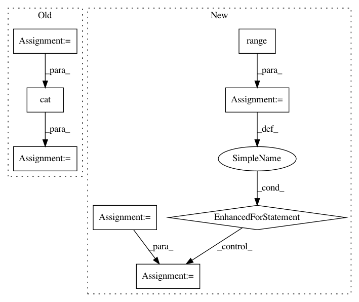

51975a8639d0b83544ec2f932567656b25bfc965,slm_lab/agent/algorithm/math_util.py,,calc_nstep_returns,#Any#Any#Any#Any#,47
Before Change
tail_rets = torch.cat([rets[n:], torch.zeros((n,))])[:rets_len]
// to add back the subtracted with v_pred at n
gammas = calc_gammas(batch, gamma)
final_terms = gammas * v_preds
final_terms = torch.cat([final_terms[n:], torch.zeros((n,))])[:rets_len]
nstep_rets = rets - tail_rets + final_terms
assert not np.isnan(nstep_rets).any(), f"N-step returns has nan: {nstep_rets}"
return nstep_rets
After Change
"""
rets = copy.deepcopy(batch["rewards"])
nstep_rets = np.zeros_like(rets) + rets
cur_gamma = gamma
for i in range(1, n):
// Shift returns by one and pad with zeros
rets[:-1] = rets[1:]
rets[-1] = 0
nstep_rets += cur_gamma * rets
// Update current gamma
cur_gamma *= cur_gamma
// Add final terms. Note no next state if epi is done
final_terms = cur_gamma * next_v_preds * (1 - batch["dones"])
nstep_rets += final_terms
return nstep_rets
In pattern: SUPERPATTERN
Frequency: 3
Non-data size: 8
Instances
Project Name: kengz/SLM-Lab
Commit Name: 51975a8639d0b83544ec2f932567656b25bfc965
Time: 2018-09-02
Author: lgraesser@users.noreply.github.com
File Name: slm_lab/agent/algorithm/math_util.py
Class Name:
Method Name: calc_nstep_returns
Project Name: NVIDIA/sentiment-discovery
Commit Name: 65c9a4857e41dcde4f5dae8a77e6cdf03953646a
Time: 2018-03-19
Author: raulp@dbcluster.nvidia.com
File Name: model/model.py
Class Name: RNNFeaturizer
Method Name: forward
Project Name: interactiveaudiolab/nussl
Commit Name: fa6f47e7aee228226421c52e61cce4e1ab4cc099
Time: 2020-03-15
Author: prem@u.northwestern.edu
File Name: tests/ml/test_loss.py
Class Name:
Method Name: test_permutation_invariant_loss_tf